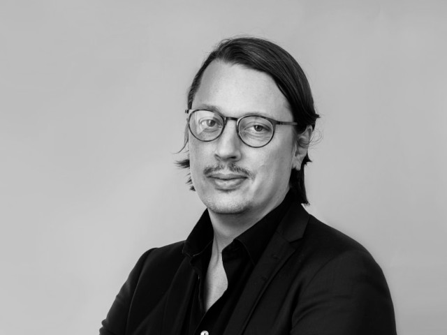
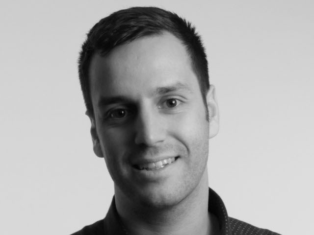
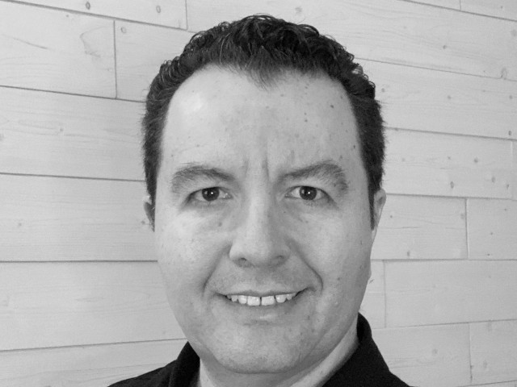
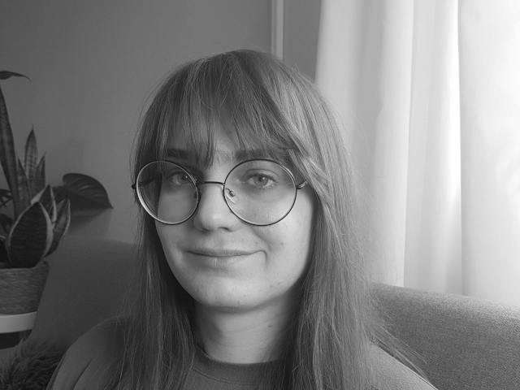
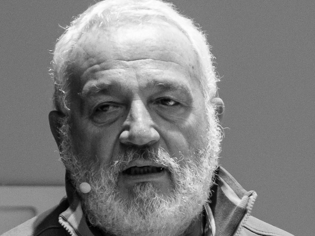

Speakers and Talks
Jan Ainali
Helping public organizations collectively develop and maintain public code
In the 21st century, software can be considered vital public infrastructure. From municipal parking services to public school administration software has become fundamental to how public organizations function.
But software that runs our society today is often hidden in proprietary code bases, producing data not owned by the public, and licensed at ever-increasing cost from outside companies.
Most public organizations recognize the need for a change, but are not always empowered to take leadership through it. The Foundation for Public Code has developed a concept called codebase stewardship. With this stewardship public organizations that have decided to collaborate when developing code get the help they need. This talk explains how it works.
Jan is working with developing tools, processes and collecting best practices for community building amongst the codebases in stewardship.
Jan has been a policy advisor on digital issues in the European Parliament for a green MEP, mainly working on the copyright directive. Before that he ran a consultancy called Open by Default, which helped public organizations use open licenses to publish open data and make open source software. Previously he was the CEO of Wikimedia Sverige after co-founding the chapter and being its chairman.
Jan has a bachelor of science in innovation and design engineering from University of Karlstad and the major in upper secondary school was computer science.
Zeeshan Ali
zbus: Why oh why? also how?
D-Bus is a popular IPC mechanism used by various services on most desktop and many embedded Linux systems in the wild. It is heavily used by even the most essential services, such as systemd. Unfortunately, for a long time, there was only one Rust D-Bus crate and most users were not happy about it for various reasons, most notably that it depends on a notoriously bad C library, libdbus. zbus, was created out of this demand for a pure Rust API that makes D-Bus easy and simple. With both elegance and efficiency as the top goals, the development of of zbus has been a much greater challenge than original anticipated but slowly they were all overcome.
Last year, zbus had its 1.0 release and it was a major success story, with most projects porting their code to it and very happy with the results.
In this talk, I’ll go through all major challenges faced during the development of zbus and the solutions chosen, and give an overview of how one can make use of zbus. As a bonus, our newly added asynchronous API, along with its benefits over the synchronous one, will also be presented.
Free Software developer, Ecomodernist, into flying & Rust, and love cats.

Isabel Drost-Fromm
Solving (team) dependencies - the Open Source way
Teams should be able to work independently. In an ideal world, a team has control over all components needed to ship value to their customers. Often though that is far from true. In more than the past two decades Open Source projects have shown how much value can be generated by pooling resources and collaborating globally across organisations to solve challenges together.
In this talk we will see how using Open Source collaboration best practices in your organisation can help deal with team interdependencies. We will see how solving common challenges together can increase speed and innovation. Finally we will explore how what we've learnt translates to your relationship of Open Source projects as a user.
Isabel Drost-Fromm is a member of the Apache Software Foundation and president of the InnerSource Commons Foundation. She's interested in all things search and text mining, and has experience in open source project governance and open collaboration. She's currently working at Europace AG as Open Source Strategist.

Zlatko Duric
What does Gnome JavaScript look like to regular JavaScript developer?
"Get your GtkApplication started in JavaScript and create a UI using Glade." - calls a friendly teaser-button on top of the Gnome Application development page to action. It's such a friendly intro that a naive passerby with a penchant for JavaScript would think that it's an easy thing to do. The author of the talk, strongly affected by said penchant for JavaScript and a long-time Linux user decided to give it a try.
This talk represents a developer's view on creating non-trivial applications for Gnome. It looks into highly visible things, like creating widgets and parts of the user interface and compares it to working with modern JavaScript web frameworks like Angular and React. Then we take a step further and add non-trivial "business logic", interacting with data locally, working with the rest of Gnome and the OS.
Finally, in the spirit of a true JavaScript, the application goes to internet and greets the world via public APIs such as Mastodon's.
Come see this talk to sre how a web developer looks at Gnome application development, and maybe learn what it takes to build an application of your owm.
Self-proclaimed JavaScript and Node JS expert, Zlatko is mostly working on enterprise software nowadays, trying to simplify long-term maintenance and support of software by making it more complex. Previously Zlatko was working a lot on the startup world, where the goal was the opposite: get a simple solution deployed and pretend there's no such thing as technical debt.
On software side, Zlatko has been using and advocating Linux, and later by extension, various free and open source software since the last century. Professionally Zlatko has worked on solving all kinds of problems: connecting cars to internet, connecting regular people to their regular office jobs remotely long before it was cool, teaching everywhere from elementary schools (and even one day at a kindergarten) to ten-thousand-people companies and generally solving problems with (and sometimes without) computers and software.

Anne-Marie Eklund-Löwinder
Signing the Internet root zone
During her presentation Anne-Marie will tell the story of the recurring ceremonies with DNSSEC key generation for the internet root zone where she attend as a Crypto Officer. What, why, when and how. It's about routines, design and arcitechture, key management and layer and layer of security. Mostly physical.
Anne-Marie Eklund Löwinder is the Chief Information Officer at The Swedish Internet Foundation and an information and IT security expert. She can answer most questions about strategic information and IT security for both businesses and ordinary users, such as current management systems for information security and ISO 27001, as well as questions about encryption, passwords, security on smart gadgets, cloud services, and networks. She is a specialist in managing DNSSEC and other security efforts which surmises to develop and advance the security of the Internet infrastructure.
Anne-Marie is one of the few people in the world who has been assigned as Trusted Community Representative in the role as a Crypto Officer where she participates in the DNSSEC key generation for the internet root zone as Crypto Officer, having been appointed by the international organization ICANN (the internet Corporation for Assigned Names and Numbers). She is also a member of The Registry Services Technical Evaluation Panel (RSTEP), a technical team under the GNSO (Generic Name Supporting Organization). RSTEP's primary responsibility is to, if necessary, participate in the evaluation of applications for new generic top-level domains (gTLDs).
In 2013 Anne-Marie was the first Swede to become inducted into the Internet Hall of Fame where she ends up in the company of, among others, Internet pioneers like Vint Cerf and Steve Crocker.
Michael Engel
Combat complexity - build your own open OS and hardware
Commercial as well as popular open source operating systems and the hardware they are based upon today have a complexity that is difficult to manage and comprehend. They include a large number of questionable design and implementation choices, invading the users' privacy, ability to understand a system and adapt it to one's own requirements.
So can we still take control of computers back into our own hands today?
In this talk, I will discuss how realistic it is in today's world of complex hardware to spin your own operating system. The systems discussed include my own work on crosstalk, a bare-metal Smalltalk-80 implementation for the Raspberry Pi, as well as other interesting open source systems.
Open source hardware systems are the next step in this direction, with RISC-V systems gaining in popularity. Accordingly, this talk will discuss the challenges and opportunities of running your own OS on your own hardware.
Michael Engel is an associate professor at the department of computer science at NTNU in Trondheim, Norway. His research and teaching interest is in system-level software, especially compilers and operating systems, and optimizations for non-functional properties on the hardware/software interface.
In addition to previous academic positions in Germany and the UK, Michael has worked on and with open source operating systems since the 1990s. In 1999, he was co-founder of kernel concepts, one of the first companies working with embedded Linux in Europe. In his spare time, he enjoys working with retro computer hardware, e.g. obscure Unix workstations and Lisp machines.

Leslie Hawthorn
The Business of Community: Strategic Open Source Engagement for Vertical Markets
As the adoption of open source software grows, organizations that have traditionally relied upon proprietary software are taking their first steps to architect open source business strategies. For open source software vendors, acting as partner and community co-creator with these organizations is a critical aspect of opening new market opportunities, advancing innovation, and increasing overall value for their customers. But what does community engagement actually mean when considered through the lens of an industry vertical rather than a particular software project?
In this talk, Leslie Hawthorn will explore how community engagement in software foundations, industry consortia, and open source projects can underpin an organization's entry into new market verticals and deepen relationships with existing customers through collaboration. She will also explore recent trends in open source and open standards as each emerges as a market force in industry verticals such as Automotive, Financial Services, Industry 4.0, and Telecommunications. Attendees will leave with a blueprint for their first steps in architecting a vertical community strategy that provides authentic value to their business and their customers.
An internationally known open source strategist and community engagement expert, Leslie Hawthorn has spent the past 15 years creating, cultivating, and enabling open source communities. Her career has provided her with the opportunity to develop, hone, and share open source business expertise spanning enterprise to NGOs, including senior roles at Red Hat, Google, the Open Source Initiative, and Elastic. She currently leads the team responsible for vertical community engagement within Red Hat's Open Source Program Office in the Office of the CTO.
Born and raised in Silicon Valley, Leslie has called Europe home for the past six years and resides in Bonn, Germany with her daughter and their two canaries, Elle and Nana. She enjoys dreaming about how open source and open standards can create citizen-centric Smart Cities and making banana cake with her little one.

Christian Landgren
Fireside chat: Öppna skolplattformen
When Stockholm introduced their new school platform, the reception was not good. A very expensive project turned out to be unusual for many users. As a reaction, a group of parents took things into their own hands by building the open school platform - "Öppna skolplattformen" - an alternative front-end to the school platform, providing a user centric experience.
In this fireside chat we will talk about the open school platform, what it is, how it was built, and the reaction from the owners of the school platform.
T.B.D.
Swapnil M Mane
Grow and manage your open source project with a proven way - The Apache Way
The Apache Way is an effective way of open source management. In this talk, we will discuss how you can incorporate the Apache way principles to grow and manage your open source project.
The following are the core parts of Apache Way, which helps us managing the 350+ project efficiently and effectively.
Community - over code Merit - recognizing your work Communication - how we write Open Development - for everything Decision Making - consensus & Votes
Swapnil is an open-source leader and advocate. He is serving as Vice President at the Apache Community Development. Apache Software Foundation is the world's largest open-source foundation. He is working on spreading open source awareness with Open Source Wave initiative (www.opensourcewave.io).
Some of his notable FOSS roles include.
-- Vice President, Apache Community Development -- Apache Software Foundation Member -- Founder, Open Source Wave -- Apache Central Services / Editorial Member -- Founder & Chair, Apache Local Community (ALC) -- PMC Member, Apache Community Development, OFBiz, Roller -- Founder Vue.js Indore community
He is skilled in E-commerce, Order Management System, Omni-Channel, and PWA strategy. And have Strong information technology professional with intensive experience in building enterprise-grade applications.
More about him can be found at https://www.swapnilmmane.com/
Martin Owens
Empowering users by asking them for money
The conversation around funding projects has often centered on what is good for the developer. But funding is an issue that concerns all users and their freedom to modify software in the ways they need.
Free Software programmer and advocate, English but an immigrant to the USA. Worked on Ubuntu, Inkscape and has always been focused on the politics of software freedom.

Christo Peev
The Future of Finance is Decentralization
Decentralized finance (DeFi) offers new opportunities and solutions to key problems, such as centralized control, limited access, inefficiency, lack of interoperability, and transparancy—that arise from the current system of centralized finance.
Blockchian-based protocols seek to build and combine open-source financial components into sophisticated systems with minimized friction and maximized value to users. At an organization level it costs no more to provide services to a consumer with $10 or $10 billion in assets, DeFi developers build a world where all meaningful financial infrastructure will be replaced by smart contracts that provide more value to a larger group of users.
Software developer and business executive with substantial entrepreneurial experience, BSc in Computer Science and MSc in Innovations and Technology Management. Strong background in business strategy and product development in the areas of FinTech, Blockchain, Data Processing and Visualization, Web, and Mobile Applications.
As a CEO of Motion Software, Christo leads a collective of world-class software developers. He is working with Silicon Valley startups and multinational corporations operating in the areas of Asset Management, Electronic Trading, Financial Reporting and Analytics, Big Data, Automation, and AI.
Christo is selected by Forbes Bulgaria as one of 30 entrepreneurs under 30 years old who change the world in 2019.

Javier Perez
Prepping your Open Source Project for Multi-Platform
Open-source software continues to grow regardless of the underlying hardware or processor architecture. It covers the latest technologies and innovations from data science and artificial intelligence to DevOps tooling and Blockchain. In this session, you will learn the latest on the growing open-source ecosystem across multiple platform architectures. Specifically, we are going to focus on open-source software for the s390x process architecture platform. Traditionally known as mainframes, this platform hosts the most crucial business functions in all industries. For decades, they have continued to improve their technology in high-speed transaction processing, capacity for large volumes of transactions, best-in-class compression, cryptography, containerization, and cloud-native applications. What a better way to grow your open-source project than making it available for multiple platforms including x86, ARM64, and s390x.
Join this session to learn about multi-platform open source software with examples of how projects and communities work and define CI pipelines to build multi-platform open source software. The audience will also learn how open-source communities are supporting multi-platform, where to find them, how it is different, and everything you need to know to participate and contribute in this exciting space.
Javier Perez leads the open-source program strategy for the IBM Z and LinuxONE platforms at IBM. Passionate about technology and open-source, Javier is responsible for technical thought leadership and open-source advocacy in the IBM Z organization. Javier has been in the open-source, cloud, SaaS, and mobile industries for 20+ years. Direct working experience with open-source software (OSS) for over 14 years. Javier led product strategy in the OSS security space for Veracode. Previously, Javier was at Axway leading Appcelerator's successful open-source SaaS offering, and at Red Hat as a Director of Product Management driving the OpenShift-based Mobile Application Platform. Javier has had the opportunity to speak at summits and conferences all over the world covering open-source, AI, security, cloud, and application development topics. Javier has held leadership positions in Product Management and Sales Engineering for different startups, leading successful acquisitions and product integrations post-acquisition. Javier holds an honors degree in Computer Systems and an MBA.

Marta Rybczynska
Into the Jungle - How to write a Linux kernel driver for any subsystem
Entering a code base you do not know might be intimidating. However, there are techniques allowing to understand, and integrate with (nearly) any piece of code.
In this talk we're going to show those techniques with an example of writing a network Linux driver from scratch. We will look into the documentation, source code of similar drivers, show what the driver should be doing to be functional.. and more. The audience will be encouraged to use the same methodology for any other unfamiliar code base.
Basic knowledge of git and Linux systems is recommended to fully benefit from the talk.
Marta Rybczynska has network security background and 15 years of experience in embedded development. She has been working with embedded operating systems like Linux and various real-time ones, system libraries and frameworks up to user interfaces. Her specialties are architecture-specific parts of the Linux kernel. In the past, Marta has served as Vice-President and treasurer for KDE e.V. She is currently starting an Open Source focused company. Apart from that, she is involved in various Open Source projects. She is also contributing kernel-related guest articles for LWN.net. In addition to the technical work, she is a public speaking trainer. She has experience with presentations on both scientific and free software conferences, including LinuxCon, Open Source Summit, Embedded Linux Conference, Akademy and FOSDEM.

Rikke Solbjørg
Porting the Oberon system to the RISC-V instruction set architecture
RISC-V is seeing more interest than ever as a free alternative to other instruction set architectures. One of its more unique features is its modularity, allowing it to potentially be used anywhere from small, embedded systems to warehouse computing.
The Oberon system is a free operating system that is still maintained by one of its creators, Niklaus Wirth, who is most well-known as the designer of Pascal. The operating system is very small, occupying less than 200kB when compiled, while being both simple and fast. Furthermore, in its most recent edition, Oberon is accompanied by a very simple RISC instruction set architecture designed specifically for it. This is to help its foremost goal, that a single person can understand every part of the system from the chip to firmware and software.
This paper evaluates the RISC-V ISA by describing the process of porting the Oberon system and the Oberon compiler to it, and seeing whether RISC-V truly is simple enough that the Oberon system remains small and fast, despite using an ISA that was not specifically designed for it. It finds that RISC-V introduces some minor complications to the system, along with making compiled binaries slightly larger. However, its detriment is negligible to the system as a whole, both in terms of size and performance.
Rikke is a student at the Norwegian University of Science and Technology. She is currently working on her master's degree, which is about using code overlays in RISC-V. She enjoys working with small systems, at the intersection between software and hardware.
Alexander Soto
Building an Open-Source Eink Laptop
We are living in a world where we rely daily on our digital devices. Mobile devices are increasingly demanding our attention - applications are using more system resources and are projected to continue increasing system requirements. We cannot easily upgrade the hardware on our devices, leading to e-waste and a higher carbon footprint. How can we address this?
At EI2030, we are working towards building an open-source e-ink laptop. In this talk, I will introduce EI2030, our structure, discuss the challenges of building an open-source laptop, how we are addressing these challenges, the project's status, and the next steps.
Alexander Soto is the project lead at EI2030, an organization dedicated to promoting healthier computing practices, and connecting people who are interested in learning, discussion, and facilitating the exchange of ideas and collaboration.
He's worked as a labor rights organizer, educator, and software engineer. His interests include exploring community-building, social justice, education, and leveraging technology to address social problems. He's currently working as an Expert-In-Residence at Resilient Coders.

Italo Vignoli
LibreOffice: Improving the Project Sustainability
LibreOffice was announced in 2010. After 10 years, it was necessary to review and update the strategy based on the evolution of the office suite market, to improve the sustainability model. Enterprises are not supporting the project as much as individual users. Over time, this can represent a threat for the sustainability of the project. We have changed our strategy to educate enterprises about the right approach to FOSS, by giving back to ensure the long term sustainability of the LibreOffice project.
Italo Vignoli is a founding member of The Document Foundation, the Chairman Emeritus of Associazione LibreItalia, an Open Source Initiative (OSI) board member, and co-chair of the ODF Advocacy OASIS Open Project. He co-leads LibreOffice marketing, PR and media relations, co-chairs the certification program, and is a spokesman for the project. He has contributed to large migration projects to LibreOffice in Italy, and is a LibreOffice certified migrator and trainer. From 2004 to 2010 he has been involved in the OOo project.